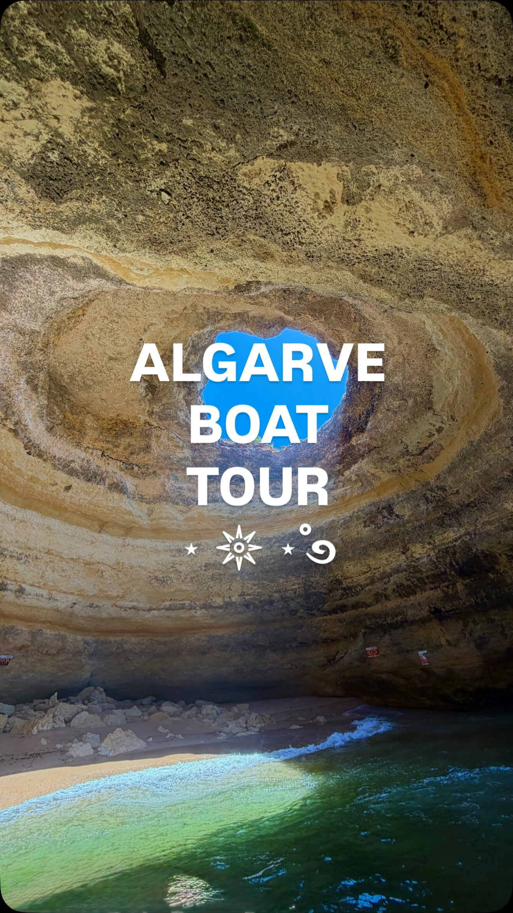

Instagram Reel

Does it matter which AI model you use? Less and less every month.
video transcript (enriched by ClaudeClaw)
Summary
[CAPTION]
Does it matter which AI model you use. Less and less every month.
[CAPTION]
Does it matter which AI model you use? Less and less every month.
The harness is what's moving now. A harness isn't AI. It's just scaffolding: instructions, a structure for organizing documents, and a set of tools.
NVIDIA's harness plus Opus 5 just scored 100% on the ARC AGI 3 benchmark. Opus 5 on its own scored 30%. Before Opus 5, single digits. Same model, different scaffolding.
So if you're building AI into your business, stay flexible. Don't store your knowledge base inside a Claude project folder or Codex, and don't rely on the internal memory of ChatGPT or Claude.
Put it on GitHub, Notion, or Google Drive. Something neutral with an MCP, so it connects to any model and any harness.
You need to retain full ownership of your information.
#AIForBusiness #SmallBusinessAI #ClaudeCode #MCP
[VIDEO]
There's a lot of talk right now about how which AI model you use is becoming less and less important, and which harness you use is becoming more important. So let's talk about what a harness is, why it's so important, and what you can do now to make sure you're taking advantage of this change. The first harness that really showed the world how powerful harnesses can be was Claude Code. While the Claude model has gotten better with each release, it was really Claude Code that made the biggest jump in capabilities. So what is Cloud Code? Well, the source code for Cloud Code was actually leaked earlier this year. And what we learned is it's actually pretty simple. As with all harnesses, it's just a set of instructions, a structure for organizing documents, and a set of tools. In other words, the harness itself does not use AI. The harness is just scaffolding for an AI model, but that scaffolding can dramatically improve the performance of AI models. And it seems like we're just getting started. Just in the last week, we've had two major breakthroughs when it comes to harnesses. Deep Seek released their completely modular open source harness. Every single feature of their harness is a plugin, even the chat UI. This will allow developers or really just anyone to take the parts of the harness they like, customize them if they want, and leave the rest. But in bigger news, Nvidia just announced that their harness plus the Ophis 5 model was able to score a 100% on the ARCAGI 3 benchmark. This is a huge surprise because prior to that, the best score on this benchmark was by Opus 5 scoring a 30%. And before Opus V, the best score was in the single digit percentages. In fact, the ArcAGI benchmark was invented to show that large language models will never be able to do certain types of tasks. Once it was saturated, they had to introduce Arc AGI2 and then ArchaeGI3, and now it looks like we'll need Arc AGI4. Or maybe they'll just give up and admit that large language models were never limited in the way they suspected. Well, what does this all mean for you if you're trying to integrate AI into your organization or just make better use of AI yourself? It means we can expect things to continue changing rapidly and you need to remain flexible. Specifically, it means do not store your knowledge base inside one of these harnesses. Instead of storing knowledge inside of a project folder in Codex or CLOD, put it somewhere neutral, like GitHub or Notion or Google Drive. And for God's sake, do not rely on the internal memory of ChatGPT or CLOD. You need to retain full ownership of all your information. And store all of that on a platform that has an MCP so you can easily connect it to any AI model and any harness. That knowledge base and any skills you're creating around that knowledge base are likely to become your business's most valuable asset.
View original on Instagram Reel →